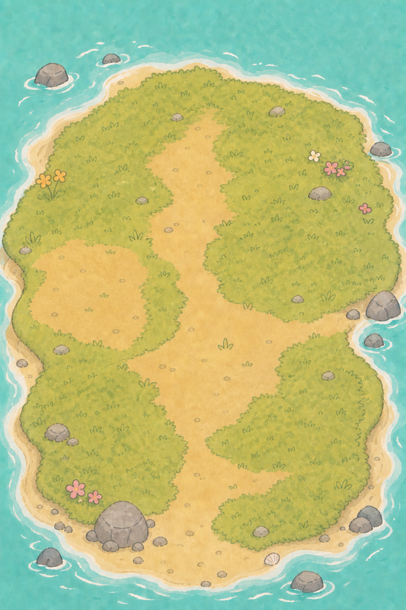

맑은 Sunshine00:00–02:40
청록 바다와 밝은 모래를 살리고, 왼쪽 위 태양 방향에서 부드러운 금빛이 들어옵니다.
현재 섬과 캐릭터의 그림체는 그대로 유지하면서, 바다 반사·태양 방향·노을·달빛·별·오두막 불빛이 하나의 10분 루프로 천천히 이어지는 힐링 월드 기획안입니다.
밤을 보기 위해 오래 기다리지 않되, 변화가 게임 연출처럼 급하게 느껴지지 않는 기준입니다.
첫 실행은 밝고 시원한 오전 햇살에서 시작합니다. 약 3분 뒤 골든아워, 약 5분 뒤 밤을 만나고, 새벽을 거쳐 다시 낮으로 돌아옵니다. 새로고침해도 시간이 초기화되지 않아 월드가 실제로 흐르는 느낌을 유지합니다.
아래 슬라이더는 기획 확인용입니다. 실제 게임에는 슬라이더를 노출하지 않고 시간이 자동으로 흐릅니다.

단순 밝기 필터가 아니라 시간대마다 주인공이 되는 빛을 바꿉니다.
청록 바다와 밝은 모래를 살리고, 왼쪽 위 태양 방향에서 부드러운 금빛이 들어옵니다.
오렌지에서 코랄로 천천히 이동합니다. 바다 반사가 길어지고 오브젝트 가장자리가 따뜻해집니다.
남색으로만 덮지 않습니다. 달빛·은빛 물결·별·랜턴과 사무실 불빛으로 포근함을 만듭니다.
보랏빛 새벽에서 옅은 분홍빛 일출로 이어지고, 다음 낮의 청록색을 자연스럽게 되찾습니다.
모든 경계는 곡선 보간해 색이 끊기거나 갑자기 바뀌지 않습니다.
현재 일러스트 질감과 아웃라인은 보존하고, 시간에 따라 필요한 값만 함께 움직입니다.
태양 위치에 따라 주광의 색·방향·세기를 바꿉니다. 낮에는 크림빛, 노을에는 살구빛, 밤에는 주광을 끄고 달빛으로 교체합니다.
현재 파도 애니메이션은 유지합니다. 여기에 태양·달 방향을 받는 반사 띠와 시간대별 청록/남색 색 보간만 추가합니다.
오두막 모니터·랜턴·자리 주변에 따뜻한 국소 조명을 켭니다. 밤에도 고양이 표정과 책상 소품이 읽히도록 최소 밝기를 보장합니다.
별은 하나의 가벼운 점 파티클로 처리하고 천천히 밝기만 흔듭니다. 화면 전체를 가리지 않고 바다와 상단 여백 위주로 배치합니다.
각 단계마다 낮·노을·밤 캡처를 비교해 다음 단계로 넘어갑니다.
10분 phase 계산, 새로고침 유지, 부드러운 보간, QA 시간 고정 옵션.
태양·달 방향광, 환경광, 안개색, 야간 최소 밝기 적용.
수면 색과 반사 띠, 노을 수평광, 야간 은빛 물결 추가.
별, 달, 랜턴, 오두막, 모니터 불빛과 잔잔한 반짝임.
PC·모바일 밝기, 성능, 아웃라인, 팝업 가독성, 리로드 연속성 확인.
‘밤이 된다’가 아니라 ‘힐링 해변의 하루가 흐른다’고 느껴져야 통과합니다.
검은 필터를 덮어 어둡게 만드는 방식은 사용하지 않습니다. 원본 색을 남긴 채 달빛·바다 반사·따뜻한 실내 조명의 대비로 밤을 표현합니다. 밤 최저 밝기는 현재 낮 화면의 약 50% 아래로 내려가지 않게 제한합니다.